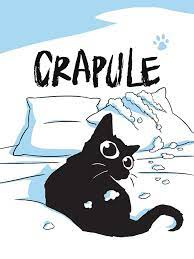
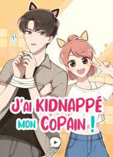
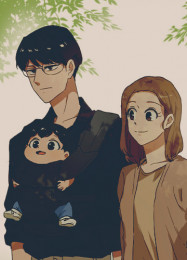

Curiosités
Alor ?
mon top 10 vous a plu?

si c'est le cas et que vous êtes curieux, voici un top 3 de webtoons du genr humour que j'aime le plus OwO.
Ce sont des weebtoons très connu et je suis sur que vous allez autant les aimer que moi ! UwU
3.Crapule
Crapule est un chat, un vrai. Le genre qui porte bien son nom. Dans son appartement au coeur de la ville, qu'il partage avec sa maîtresse, chaque jour comporte son lot d'aventures et de bêtises : missions d'exploration dans les placards, amour fou avec les rideaux et séances de câlins incongrues... Parfois au grand dam de sa propriétaire qui doit réparer les dégâts. Mais on pardonne toujours à Crapule, tant il est mignon.
2.Oups! J'ai kidnappé mon copain!
Alors qu’elle effectue une livraison pour le restaurant où elle travaille, Bai Xiaomei fait une étrange découverte dans sa camionnette. À la place des légumes… elle trouve un jeune homme qui a été kidnappé. Au lieu d’appeler la police, le jeune homme, Qin Junce, lui propose un marché : en échange d’une grosse somme d’argent, Xiaomei doit l’héberger temporairement. Appâtée par le gain, Xiaomei accepte. Mais elle est loin de se douter que cette cohabitation inattendue va chambouler sa vie !
1.The devil's child
Lui, c’est un homme parfait. Riche, élégant et intelligent, sauf pour une chose : il déteste les enfants. Elle, c’est une femme plus ordinaire. Elle n’a qu’un seul talent : elle s’occupe des bébés à merveille. C’est le duo rêvé pour élever cet enfant… Si seulement il n’avait pas été envoyé par le diable en personne !